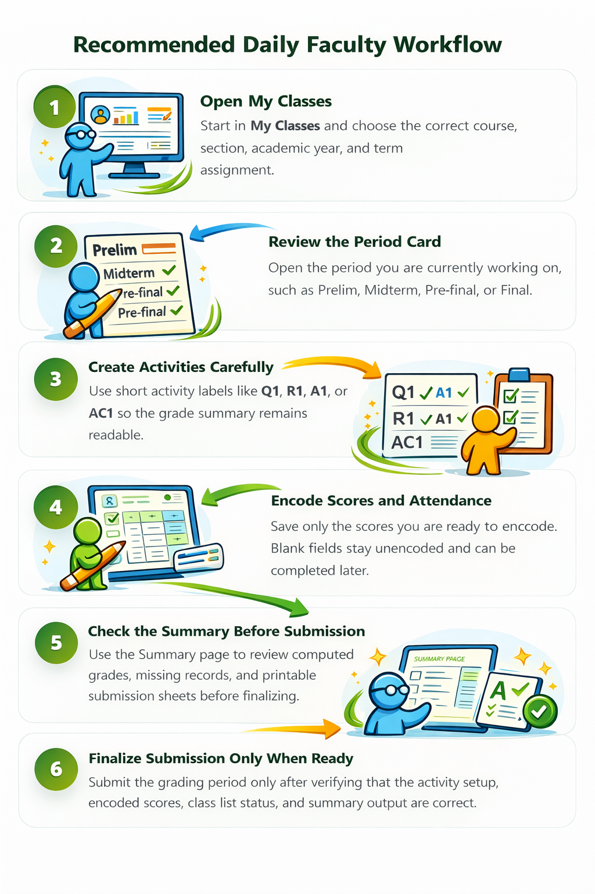
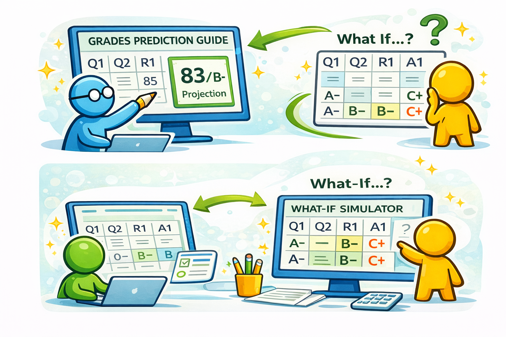
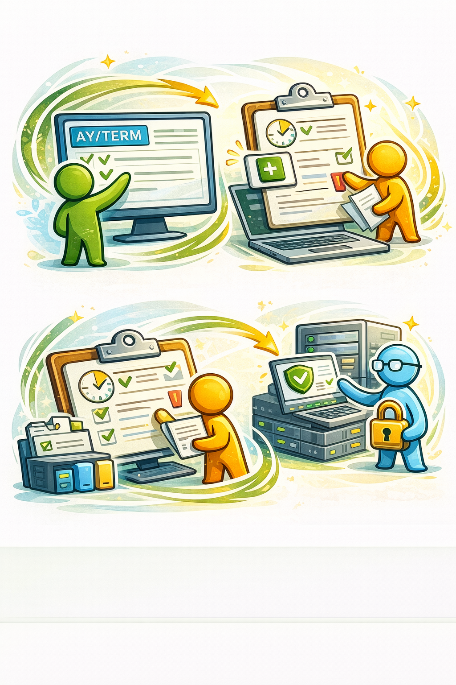
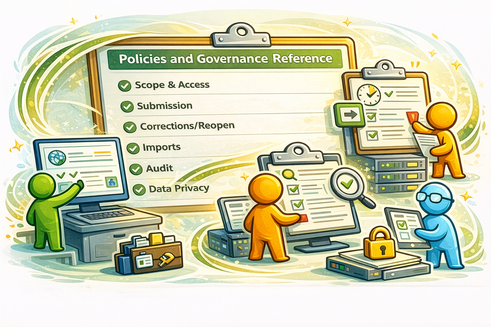

TeacherMate+
A template-driven, governance-aware academic grading platform built to support faculty workflow, academic oversight, and informed administrative decision-making.
What TeacherMate+ Is
Core identity
- Multi-tenant, multi-campus academic grading platform
- Separate Admin Portal and Faculty Portal
- Centralizes grading, submission, correction, and monitoring
- Designed to reduce risk from disconnected spreadsheets and informal grade handling
Main message for academic heads
TeacherMate+ is not just a grade encoding page. It is an academic operations platform that brings computation, governance, compliance, and faculty support into one workflow.
Core Platform Highlights
Core academic engine
- assigned grading templates per course
- components, sub-components, and details
- period-grade computation
- final-grade computation
- correction-aware recomputation
Why that matters
- less variation in how grades are computed
- easier faculty onboarding
- stronger departmental consistency
- clearer explanation when students or leadership ask how a grade was derived
Faculty Workflow Support
Receive and accept teaching load
Faculty assignment acceptance, reminders, and acknowledgment are built into the portal.Encode activities and scores by grading period
Faculty work inside the actual period structure instead of maintaining separate files per period.Review computed summary and submit
The system helps faculty move from encoding to summary to formal submission.Faculty support features
- deadline visibility and reminder center
- private faculty notes
- period-specific prediction / what-if support
- students-at-risk monitoring
- printable periodic summary for external encoding workflows


Governance Is Built Into the Workflow
Governance controls already supported
- active academic year and term
- active grading period
- template governance lifecycle
- submission deadlines and period locks
- correction route and approval flow
- configurable security and feature settings
Why this matters to academic heads
- less informal or hidden grade movement
- clearer authority lines
- repeatable academic process across departments
- stronger trust in institutional grading outputs


Administration Feeds for Informed Decision-Making
TeacherMate+ is built not only to process grades, but also to surface decision-support views for academic administrators and heads.
Readiness and activity monitoring
- faculty assignment dashboard
- faculty activity monitor
- grade book monitoring
Academic quality signals
- prediction monitor
- at-risk indicators
- class-level pass/fail visibility
Compliance and governance signals
- submission status
- non-compliance monitoring
- correction history and audit trail
Correction, Submission, and Compliance Governance
Correction governance
- faculty files a formal petition for correction
- affected students and items are identified inside the request
- approval is routed by governance logic
- approved corrections can trigger recomputation
Submission compliance
- overdue unsubmitted grade books remain open for completion
- the system can now issue notice, warning, and escalation communications
- faculty can see these in the portal
- academic heads can monitor the same cases from the admin side
Security, Auditability, and Accountability
Security-oriented controls
- forced password change
- privacy consent tracking
- single-device session enforcement
- login lockout controls
Academic accountability controls
- submission history
- correction workflow records
- audit logs for significant actions
- governance-safe monitoring pages
Institutional Value
For Faculty
- clearer grading structure
- guided workflow by period
- fewer manual formula dependencies
- better visibility of deadlines and at-risk cases
For Academic Heads
- better oversight on readiness and compliance
- faster follow-up on concerns
- more confidence in grading governance
- better basis for academic decisions
For the Institution
- standardization
- reduced operational risk
- stronger auditability
- clearer policy enforcement
Closing Message
Simple summary for the room
TeacherMate+ helps the institution move from fragmented grading practice toward a more consistent, governed, visible, and support-oriented academic workflow.
Suggested closing line
The value of the platform is not only that it computes grades. Its value is that it gives the school a clearer academic process, stronger governance, and better information for timely intervention.
Optional discussion prompts after the presentation
- Which governance controls should be required across all departments?
- Which admin feeds are most useful for deans, CAO, and area chairs?
- What faculty support features should be prioritized for adoption and training?
File: docs/TeacherMate+_ACADEMIC_PRESENTATION.html